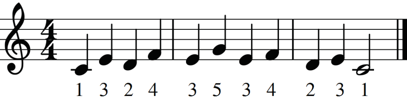
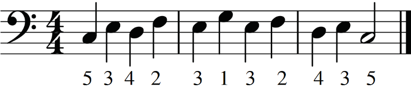
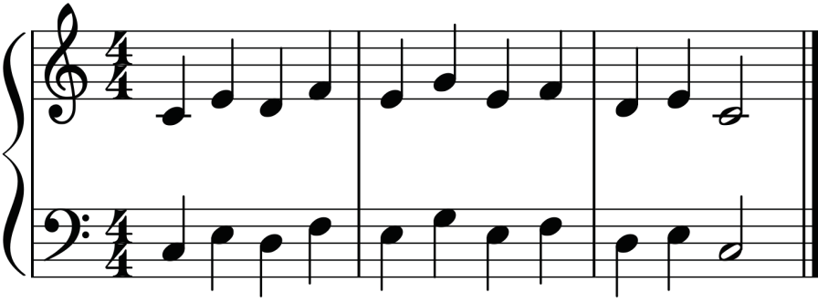
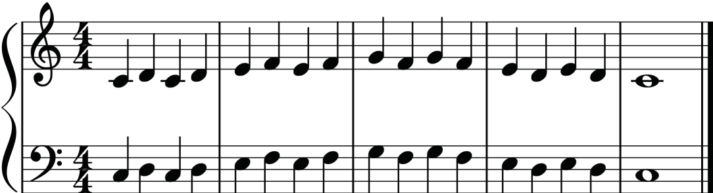
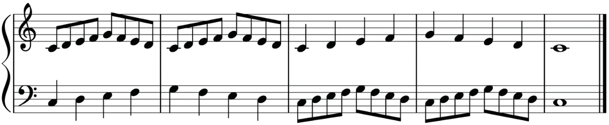

(iii)
(iv)
(v)
(vi)
(vii)Exercise 6.7
Answer the following question.
Explain the importance of observing correct fingering when playing the piano.

(iii)
(iv)
(v)
(vi)
(vii)Answer the following question.
Explain the importance of observing correct fingering when playing the piano.